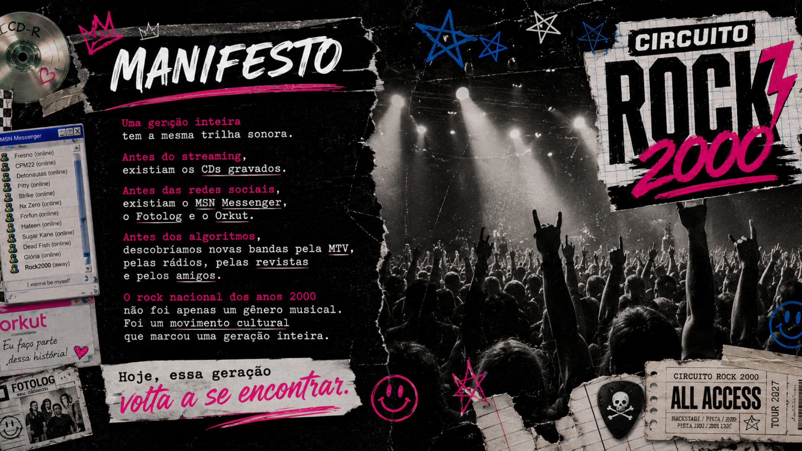
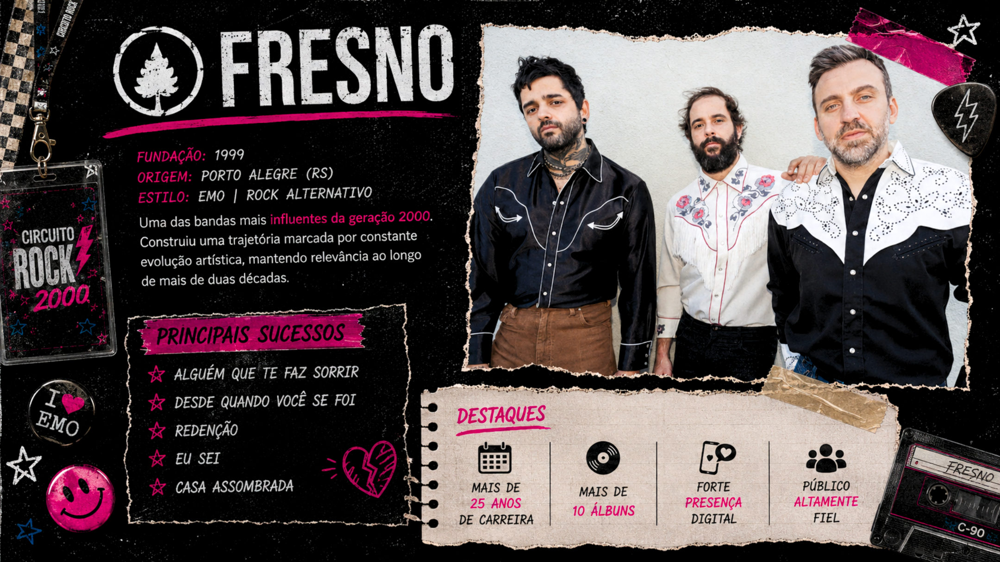
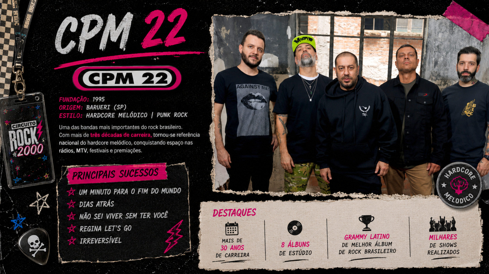
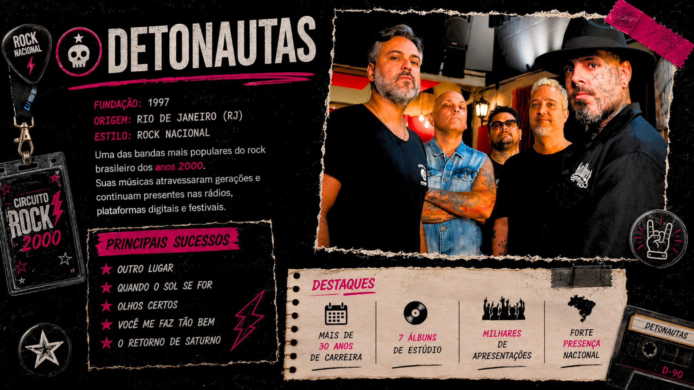
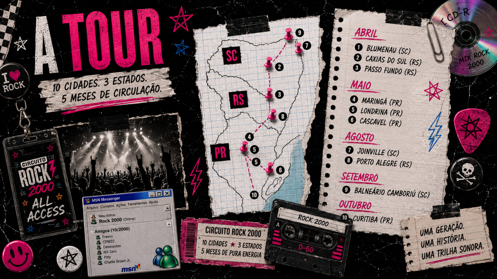
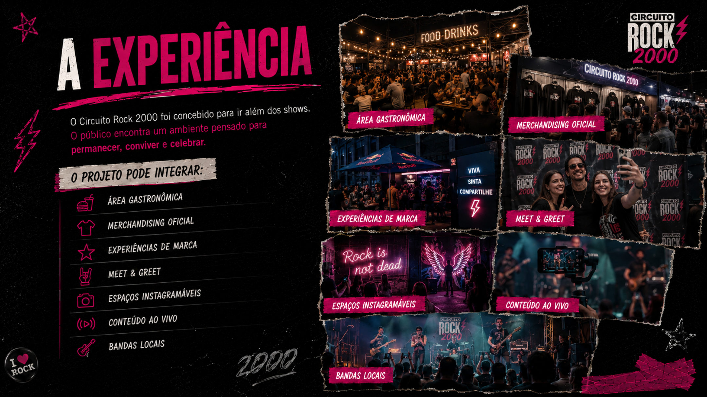

Uma geracao. Uma historia. Uma trilha sonora.
Circuito Rock 2000
O som de uma geracao volta aos palcos em uma plataforma de musica, nostalgia, comunidade e marcas.
Manifesto
Antes do streaming, existiam os CDs gravados.
Antes das redes sociais, existiam MSN, Fotolog e Orkut. Antes dos algoritmos, descobriamos bandas pela MTV, pelas radios, pelas revistas e pelos amigos.
Hoje, essa geracao volta a se encontrar.

A geracao
Quem cresceu ouvindo essas musicas continua presente.
O projeto
Muito alem de uma turne.
Uma plataforma de entretenimento ao vivo criada para celebrar a geracao que cresceu ouvindo o rock nacional dos anos 2000.
Line-up
Tres bandas. Tres estilos. Uma geracao inteira.

Fresno
Rock alternativo / emo

CPM 22
Hardcore melodico / punk rock

Detonautas
Rock nacional

A tour
10 cidades, 3 estados, 5 meses de circulacao.
O circuito percorre o Sul do Brasil conectando publico, artistas, cidades e marcas em torno da nostalgia musical dos anos 2000.
- Blumenau
- Caxias do Sul
- Passo Fundo
- Maringa
- Londrina
- Cascavel
- Joinville
- Porto Alegre
- Balneario Camboriu
- Curitiba
Experiencia
O publico permanece, convive e celebra.

Area gastronomica
Merchandising oficial
Experiencias de marca
Meet & Greet
Espacos instagramaveis
Conteudo ao vivo
Bandas locais
Patrocinio
Uma plataforma para marcas.
O Circuito Rock 2000 oferece oportunidades de conexao real, visibilidade autentica, relacionamento, conteudo e associacao de valor.
Fale com a SevenXApresentacao
Veja a narrativa completa.
Contato
O som de uma geracao.
Direcao Artistica e de Novos Negocios: Gian Zambon
Direcao Executiva: Bruno Neves
Direcao Criativa e de Planejamento: Adriano Pinheiro